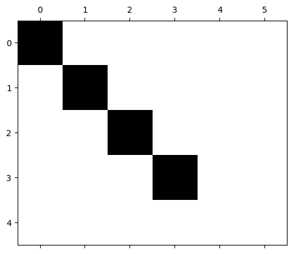
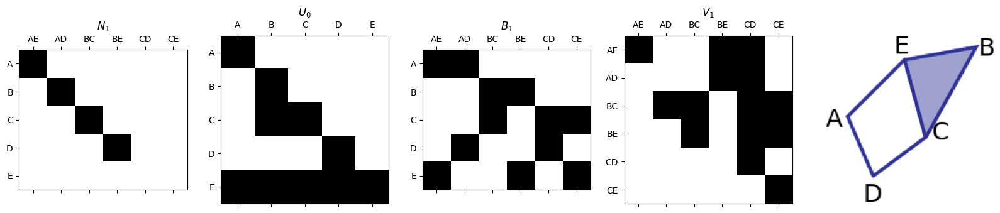
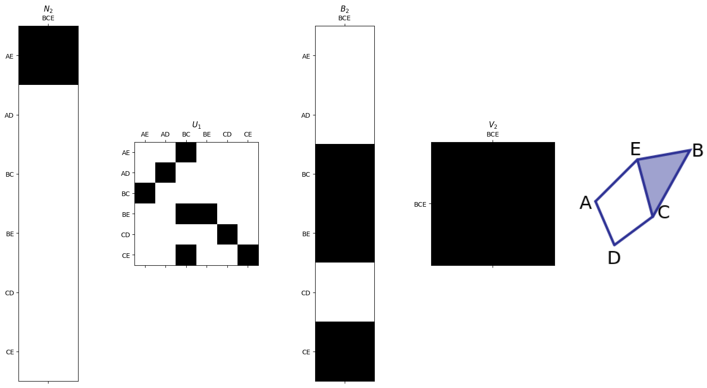
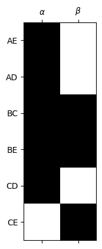
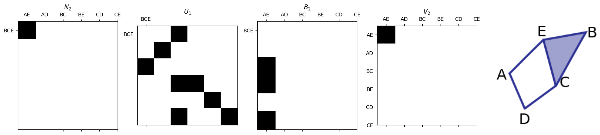
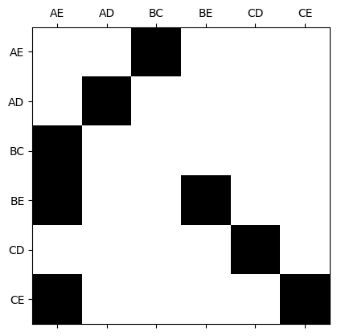
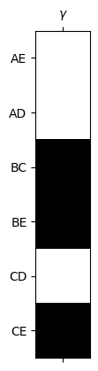

Lecture 7: Jupyter Notebook#
Computing Homology#
CMSE 890#
Dr. Liz Munch#
Note: If you’re viewing this jupyter notebook on the website, you need to click on the download button above to actually run it.
import numpy as np
import matplotlib.pyplot as plt
import matplotlib.image as mpimg
import pandas as pd
%matplotlib inline
Computing Homology Dimension#
First, we want an example to use.

Save the boundary matrix for \(\partial_1:C_1(K) \to C_0(K)\) with standard basis as a numpy matrix B1.
vertex_list = ['A','B','C','D','E']
edge_list = ['AE','AD','BC','BE','CD','CE']
triangle_list = ['BCE']
# Here is an example of the boundary matrix as a pandas data frame for visualization of row and column labels.
# You don't need this, and in fact won't use it for real computations.
# You really want the numpy array version in the next cell.
B1_df = pd.DataFrame(0,index=vertex_list, columns= edge_list)
for edge in B1_df.columns:
B1_df.loc[edge[0], edge] = 1
B1_df.loc[edge[1], edge] = 1
B1_df
| AE | AD | BC | BE | CD | CE | |
|---|---|---|---|---|---|---|
| A | 1 | 1 | 0 | 0 | 0 | 0 |
| B | 0 | 0 | 1 | 1 | 0 | 0 |
| C | 0 | 0 | 1 | 0 | 1 | 1 |
| D | 0 | 1 | 0 | 0 | 1 | 0 |
| E | 1 | 0 | 0 | 1 | 0 | 1 |
# If I really want a numpy matrix, I can do this:
B1 = np.array(B1_df)
B1
array([[1, 1, 0, 0, 0, 0],
[0, 0, 1, 1, 0, 0],
[0, 0, 1, 0, 1, 1],
[0, 1, 0, 0, 1, 0],
[1, 0, 0, 1, 0, 1]])
Computing \(\partial_2\)#
Do the same for \(\partial_2:C_2(K) \to C_1(K)\) and save it as B2.
# Save a numpy matrix B2 representing the $\partial_2$ transformation
B2df = pd.DataFrame(0,columns=triangle_list, index= edge_list)
B2df.loc['BC', 'BCE'] = 1
B2df.loc['BE', 'BCE'] = 1
B2df.loc['CE', 'BCE'] = 1
B2 = np.array(B2df)
B2df
| BCE | |
|---|---|
| AE | 0 |
| AD | 0 |
| BC | 1 |
| BE | 1 |
| CD | 0 |
| CE | 1 |
Other dimensions#
I could save the matrices B0 and B3 if I really wanted to, but because the first represents
and (because there are no 3-simplices and thus \(C_3(K) = 0\)) the second represents
both are just the 0-transformation so we don’t have to work hard to calculate anything.
Calculating Betti Number#
Definition: The \(p\)-th Betti number \(\beta_p\) is the dimension of the \(p\)-dimensional homology group, \(H_p(K)\).
The beauty of linear algebra is that we (where here, we \(=\) my computer) can easily figure out the Betti number by just checking things on matrices.
Where does all this come from#
Remember from linear algebra that for any linear transformation \(f:U \to V\), \(\mathrm{dim}(U) = \mathrm{dim}(\mathrm{Ker}\,f)) + \mathrm{dim}(\mathrm{Im}\,f)).\)
So for \(\partial_p\), This means that
Notation:
\(\mathrm{dim}(C_p)\) |
\(\mathrm{dim}(Z_p)\) |
\(\mathrm{dim}(B_{p})\) |
|---|---|---|
\(c_p\) |
\(z_p\) |
\(b_p\) |
so the above equation becomes \(c_p = z_p + b_{p-1}.\)
For any quotient space \(V/W\), linear algebra tells us that
This means \(\beta_p = \mathrm{dim}(Z_p/B_p) = z_p-b_p\).
Smith normal form#
To do this, we will calculate the Smith Normal Form of our boundary matrix using row and column operations (equivalently, using a change of basis). A matrix (well, as long as we’re doing every thing in \(\mathbb{Z}_2\) like we are) is in smith normal form if it has an upper left block equal to the identity matrix, and zeros everywhere else.
In particular, a boundary matrix in Smith normal form looks like this:

Matrix representation#
If we keep careful track of our row and column operations when determining the Smith normal form for matrix A, we get matrices \(N\), \(U\), and \(V\) such that
Smith normal form code#
Download the
smith.pyscript, and save it to the same location as this jupyter notebook.The function
smith.smith_formoutputs(N,U,V).Notation: When we calculate the Smith normal form of the boundary matrix, we can write \(N_p = U_{p-1}\partial_pV_p.\)
# This scipt computes the Smith normal form assuming inputs use Z_2 coefficients.
import smith
N1,U0,V1= smith.smith_form(B1)
N2,U1,V2= smith.smith_form(B2)
plt.spy(N1)
plt.show()

Smith Normal Form for \(\partial_1\)#
\(N_1 = U_{0}\partial_1 V_1\).
# This script is in the smith.py file, it's just for plotting.
smith.plotFirstSetOfMatrices(N1,U0,B1,V1,edge_list,vertex_list)

Smith Normal Form for \(\partial_2\)#
\(N_2 = U_{1}\partial_2 V_2\).
smith.plotSecondSetOfMatrices(N2,U1,B2,V2,edge_list,triangle_list)

You do it:#
Now use these matrix outputs to calculate the betti numbers \(\beta_0\), \(\beta_1\), and \(\beta_2\). Specifically, use the image below and the fact that \(\beta_p = z_p - b_p\).
N2_pd = pd.DataFrame(N2, index = edge_list, columns = triangle_list)
N2_pd
| BCE | |
|---|---|
| AE | 1 |
| AD | 0 |
| BC | 0 |
| BE | 0 |
| CD | 0 |
| CE | 0 |
N1_pd = pd.DataFrame(N1, index = vertex_list, columns = edge_list)
N1_pd
| AE | AD | BC | BE | CD | CE | |
|---|---|---|---|---|---|---|
| A | 1 | 0 | 0 | 0 | 0 | 0 |
| B | 0 | 1 | 0 | 0 | 0 | 0 |
| C | 0 | 0 | 1 | 0 | 0 | 0 |
| D | 0 | 0 | 0 | 1 | 0 | 0 |
| E | 0 | 0 | 0 | 0 | 0 | 0 |
Fill out this table to answer the previous question#
\(c_p\) |
\(z_p\) |
\(b_p\) |
\(\beta_p = z_p - b_p\) (Betti number) |
|
|---|---|---|---|---|
\(p=0\) |
||||
\(p=1\) |
||||
\(p=2\) |
Solution commented out in this cell…. no peeking!#
Reading off the generators of homology#
Generators for \(Z_p(K)\)#
Remember \(Z_p(K)\) is the kernel of the boundary map \(\partial_1: C_p(K) \to C_{p-1}(K)\).
We can think of Smith Normal Form as giving a particularly nice basis for the domain and range to make finding the kernel and image easy.
The generators for \(Z_1\) are the last \(z_1\) columns of \(V_1\).
smith.plotFirstSetOfMatrices(N1,U0,B1,V1,edge_list,vertex_list)
Generators for \(Z_1(K)\) in this example#
z1 = 2
plt.spy(V1[:,-z1:])
ax = plt.gca()
ax.set_xticks([0,1])
ax.set_xticklabels([r'$\alpha$',r'$\beta$'])
ax.set_yticks([0,1,2,3,4,5])
ax.set_yticklabels(edge_list)
plt.show()
alpha = V1[:,-z1]
beta = V1[:,-1]

Generators for \(B_p(K)\)#
The generators for \(B_p(K)\) are stored as the first \(b_p\) columns of \(U_p^{-1}\).
In this case, we think of the labels for the rows as the \(p\)-simplices
smith.plotSecondSetOfMatrices(N2,U1,B2,V2,triangle_list,edge_list)

Generators for \(B_1(K)\) in this example#
# Compute $U_1$ inverse
U1_inv = np.mod(np.linalg.inv(U1),2).astype(int)
plt.spy(U1_inv)
ax = plt.gca()
ax.set_xticks([0,1,2,3,4,5])
ax.set_yticks([0,1,2,3,4,5])
ax.set_xticklabels(edge_list)
ax.set_yticklabels(edge_list);
plt.show()

b1 = 1
plt.spy(U1_inv[:,:b1])
ax = plt.gca()
ax.set_xticks([0])
ax.set_xticklabels([r'$\gamma$'])
ax.set_yticks([0,1,2,3,4,5])
ax.set_yticklabels(edge_list);
gamma = U1_inv[:,0]
plt.show()

Computing generators of homology#
For now, brute force:
print('Compute the equivalence class of alpha:')
print(edge_list)
print( 'alpha:', np.mod( alpha + 0 , 2) )
print( 'alpha + gamma:', np.mod( alpha + gamma ,2 ) )
print("\nNotice that neither element of the equivalence class is beta or 0 ")
print(beta)
Compute the equivalence class of alpha:
['AE', 'AD', 'BC', 'BE', 'CD', 'CE']
alpha: [1 1 1 1 1 0]
alpha + gamma: [1 1 0 0 1 1]
Notice that neither element of the equivalence class is beta or 0
[0 0 1 1 0 1]
print('Compute the equivalence class of beta:')
print(edge_list)
print('beta:', np.mod( beta + 0 , 2) )
print('beta+gamma:', np.mod( beta + gamma ,2 ) )
print("Notice that 0 is an element of the equivalence class, so [beta] = [0]. ")
Compute the equivalence class of beta:
['AE', 'AD', 'BC', 'BE', 'CD', 'CE']
beta: [0 0 1 1 0 1]
beta+gamma: [0 0 0 0 0 0]
Notice that 0 is an element of the equivalence class, so [beta] = [0].
If there’s time…..#
For the following example (the tetrahedron is empty):

What are the boundary matrices \(\partial_0\), \(\partial_1\), and \(\partial_2\)?
Use the
smithpackage to get the smith normal form of each.Fill out the table below to determine the Betti numbers.
Give representatives for each of the homology classes.
\(c_p\) |
\(z_p\) |
\(b_p\) |
\(\beta_p = z_p - b_p\) |
|
|---|---|---|---|---|
\(p=0\) |
||||
\(p=1\) |
||||
\(p=2\) |